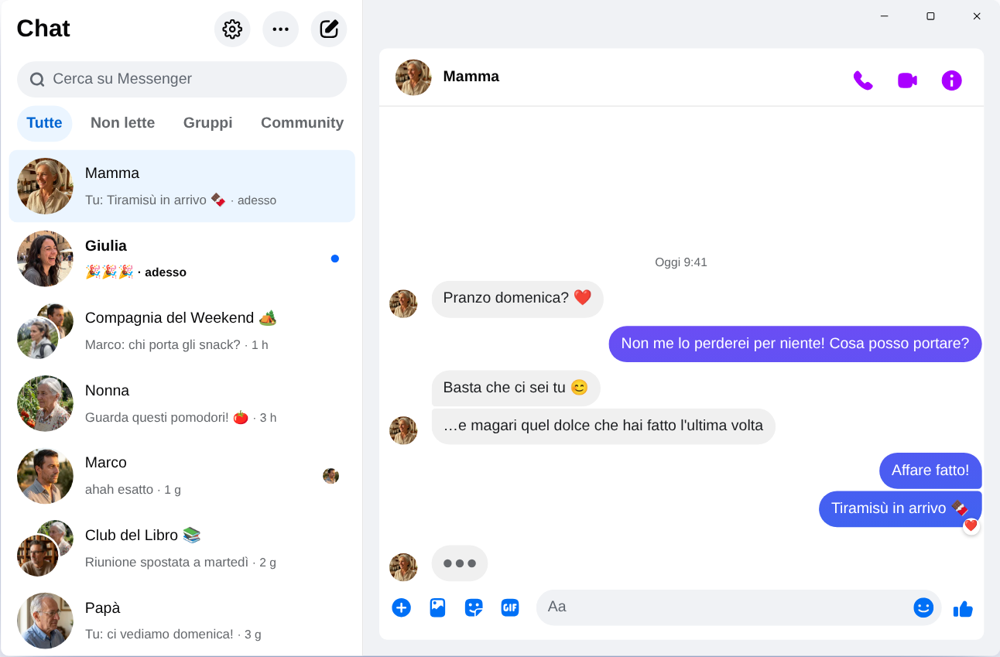

Chatpane / Windows
Aggiornato a novembre 2026
Come usare Messenger sul PC nel 2026
Meta ha chiuso l'app di Messenger per Windows il 15 dicembre 2025, e messenger.com ora ti rimanda a Facebook. Ecco cosa funziona oggi su un PC o un portatile con Windows 10 o 11.
Gratis e open source · Windows 10 e 11 · Non è un'app di Meta
In breve
Non esiste più un'app ufficiale di Messenger per PC. Meta l'ha tolta dal Microsoft Store e, da aprile 2026, Messenger sul computer funziona solo su facebook.com/messages, dentro Facebook.
Se vuoi Messenger in una finestra tutta sua, senza Feed e Reels, Chatpane è un'app gratuita e open source per Windows che apre le tue chat e nient'altro. È un progetto indipendente: non è di Meta.
Perché le vecchie guide non funzionano più
Molte guide dicono ancora di cercare Messenger nel Microsoft Store, e diversi siti di download offrono ancora l'installer di «Messenger 2250.1». È proprio l'app che Meta ha chiuso a dicembre 2025: quando la apri, ti rimanda semplicemente a Facebook. Installarla non serve a niente.
E non inserire la password di Facebook in programmi o pagine di cui non conosci la provenienza. Se qualcuno ti propone un «Messenger per PC» con una sua schermata di accesso, diffida.
Che fine ha fatto Messenger per Windows?
Nel 2024 Meta ha sostituito l'app per Windows con una versione web impacchettata. A ottobre 2025 ne ha annunciato la chiusura e l'ha tolta dal Microsoft Store, e il 15 dicembre 2025 l'app ha smesso di funzionare. Ad aprile 2026 ha chiuso anche messenger.com. Date e dettagli sono nella pagina Messenger su PC non funziona più.
Le alternative
Come usare Messenger su Windows
Chatpane su Windows
Chatpane apre lo stesso Messenger che vedi nel browser, quindi chat, gruppi, chiamate e foto sono tutti lì e restano sincronizzati con il telefono. Toglie solo tutto il resto di Facebook.
- Solo Messenger. Feed, Reels, Marketplace e la ricerca di Facebook sono nascosti.
- Notifiche utili. Rispondi, reagisci, segna come letto o silenzia direttamente dalla notifica, senza aprire la finestra. Comodo se vendi su Marketplace e non vuoi perdere un acquirente.
- Barra delle applicazioni e area di notifica. Il numero dei messaggi non letti sull'icona, l'avvio insieme a Windows e la possibilità di restare attivo nell'area di notifica quando chiudi la finestra.
- Privacy. Nascondi che stai scrivendo, nascondi nomi e immagini del profilo quando condividi lo schermo e blocca le richieste di analisi di Facebook (attivo di default).
- In italiano. Chatpane segue la lingua del computer, quindi menu e impostazioni sono in italiano.

Come installarlo
- Scarica l'installer per Windows. Se il tuo PC ha un processore ARM, usa l'installer ARM64.
- Aprilo. Gli installer di Chatpane per Windows non hanno ancora una firma digitale, quindi SmartScreen potrebbe mostrare «Windows ha protetto il PC». Clicca su «Ulteriori informazioni» e poi su «Esegui comunque». Scarica Chatpane solo da chatpane.app o da GitHub.
- Accedi con il tuo solito account Facebook. Le chat compaiono subito.
Non vuoi installare niente? La versione portable (.zip) funziona senza installer.
Domande frequenti
Domande su Messenger per PC
Chatpane è gratis?
Sì. Niente prezzo, niente abbonamento, niente pubblicità. È open source con licenza MIT e il codice è pubblicato su GitHub, così chiunque può controllarlo.
È l'app ufficiale di Messenger?
No. Chatpane è un progetto indipendente, senza legami con Meta. Mostra il vero Messenger di facebook.com/messages in una finestra tutta sua: i messaggi passano comunque da Messenger e valgono le condizioni di Meta.
Funziona senza un account Facebook?
No. Da aprile 2026 Meta permette di usare Messenger senza account Facebook solo nell'app per smartphone. Sul computer, Chatpane e qualsiasi altra soluzione hanno bisogno di un account che possa accedere a facebook.com.
Funziona su Windows 10?
Sì, su Windows 10 e 11. Chatpane usa Microsoft Edge WebView2, già incluso in Windows 11. Su Windows 10, se manca, lo scarica l'installer.
Posso fare videochiamate?
Sì. È Messenger completo, quindi chiamate e videochiamate si aprono in una finestra a parte, come su facebook.com.
Scarica Chatpane
Gratis e open source. Si scarica in pochi secondi - pesa solo circa 4 MB.
Disponibili anche: .zip portable · .exe ARM · .zip ARM
Mac Intel più vecchio? Intel .dmg
L'elenco completo con i checksum si trova su
GitHub
- oppure brew install --cask kristofferR/tap/chatpane